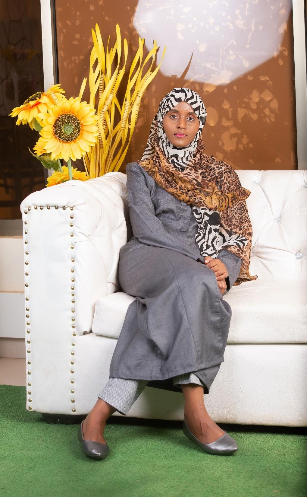

For individuals
Mentoring
One-to-one sessions for people pivoting across disciplines, identities or industries. Together we take stock of what you already have and design your next move.
Blueprint to B.O.L.D™ · by Faiza Mgua
I’m Faiza Mgua. I trained as an architect and now work in M&A Transaction Services. Blueprint to B.O.L.D is the framework I created for brave, intentional career redesign, for anyone pivoting across disciplines, identities or industries.

Scroll · the plan comes first
I didn’t leave Architecture behind. I brought it with me. And that’s what made all the difference.
The story
Not just career pivots but life pivots. The kind that challenge your identity, stretch your confidence, and ultimately lead to growth you never expected.
Bold moves are often messy. Uncertain. Uncomfortable. But they are also transformative, even when they don’t go exactly to plan, because they show you what you are capable of.
Where I started
I studied Architecture, a field built on creativity, systems, and solving problems with precision. It taught me how to think in layers, design with purpose, and always consider the bigger picture.
But something inside me was curious about more. About business, strategy, and the dynamics that shape industries, not just buildings.
The pivot
This wasn’t an overnight decision. I wanted a broader playing field. I wanted to impact systems and strategies, not just spaces.
The hard part? I had no business degree. No finance background. Just questions, and the guts to explore them.
The fear
I worried I didn’t belong. I battled imposter syndrome. But I kept going, taking small steps. Learning. Reading. Applying.
Sometimes boldness doesn’t feel like confidence – it feels like curiosity.
The bridge
Architecture gave me more than a degree. It gave me tools I use every day. Your past isn’t something you leave behind. It’s something you leverage.
What are you holding back?
You don’t have to burn it all down. Just shift the lens.
My work today
Advising on investing, buying and selling of businesses. It’s analytical. It’s creative. It’s fast paced. It challenges me in ways that feel meaningful.
The framework
A guide to brave, intentional career redesign, especially for those pivoting across disciplines, identities or industries. With clarity, not chaos.
Let go of old definitions of success and who you thought you had to be.
Ask yourselfWhich old definition of success are you still carrying?
Reclaim your past experiences as assets, not detours or mistakes.
Ask yourselfWhich part of your past have you been treating as a detour?
Embrace beginnerhood and grow visibly, not silently.
Ask yourselfWhat are you learning right now that you could share?
Build with intention, even if imperfect, a future that reflects who you are now. Use strategy and creativity to step into your new direction.
Ask yourselfWhat’s one move you could design this month, even if it’s imperfect?
“Most people share their story once they’ve ‘made it’. I’m sharing mine not just as advice but as someone in it; still growing, still learning, still choosing boldly.”
Work with me
I work with individuals, teams and event organisers who want to approach change with clarity, not chaos.
For individuals
One-to-one sessions for people pivoting across disciplines, identities or industries. Together we take stock of what you already have and design your next move.
For events and organisations
Talks on career pivots, reinvention and turning past experience into leverage, from someone who is still in it.
For teams and cohorts
Hands-on B.O.L.D sessions where each participant leaves with a blueprint for their own next move.
Tell me what you’re working on and I’ll get back to you.
Get in touch
For mentoring, speaking and workshop enquiries.